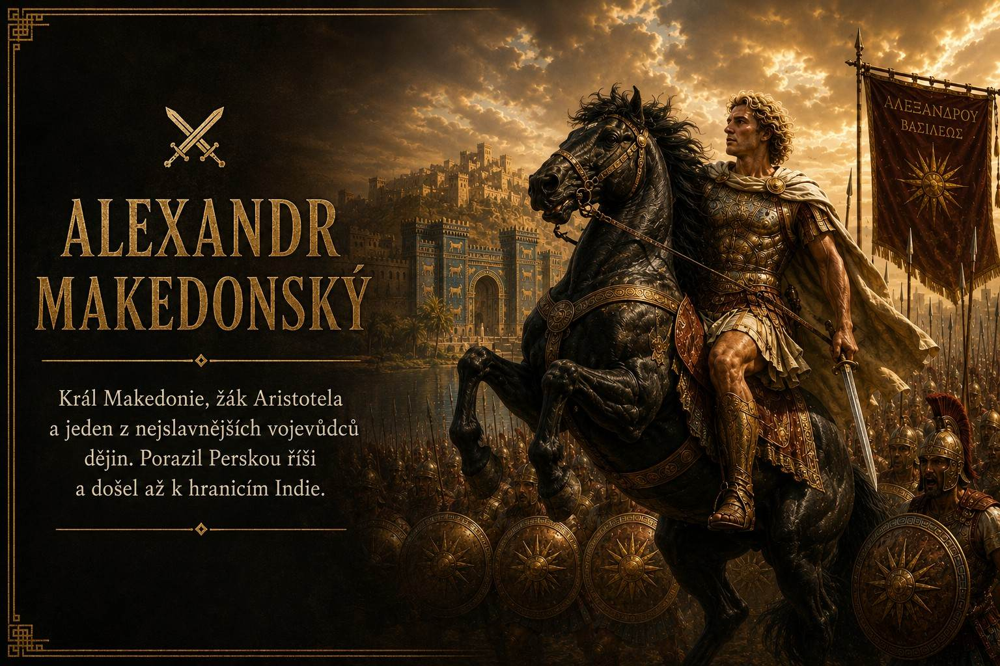
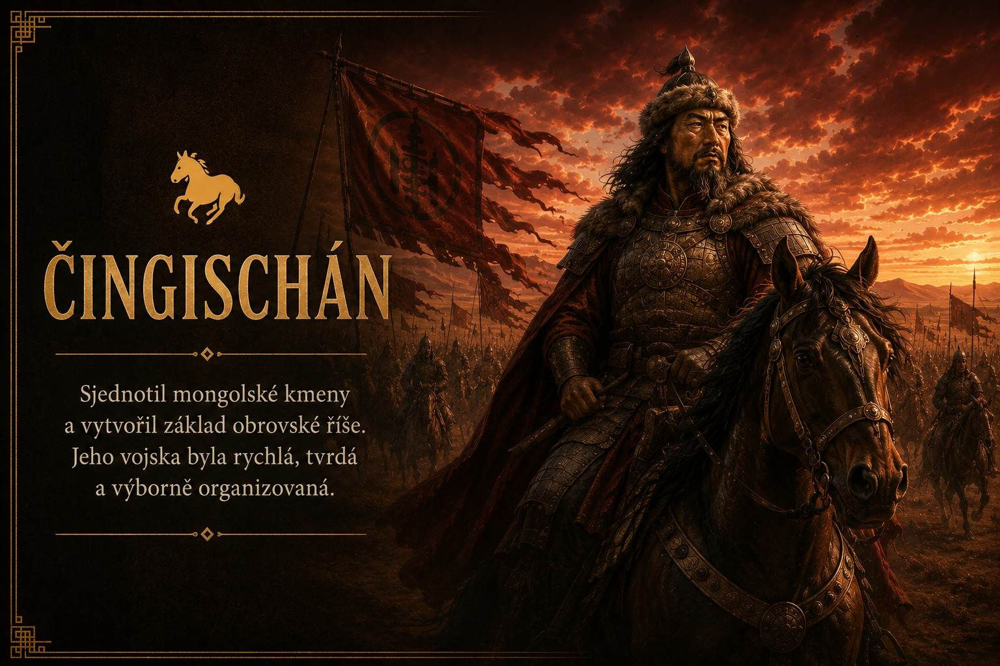
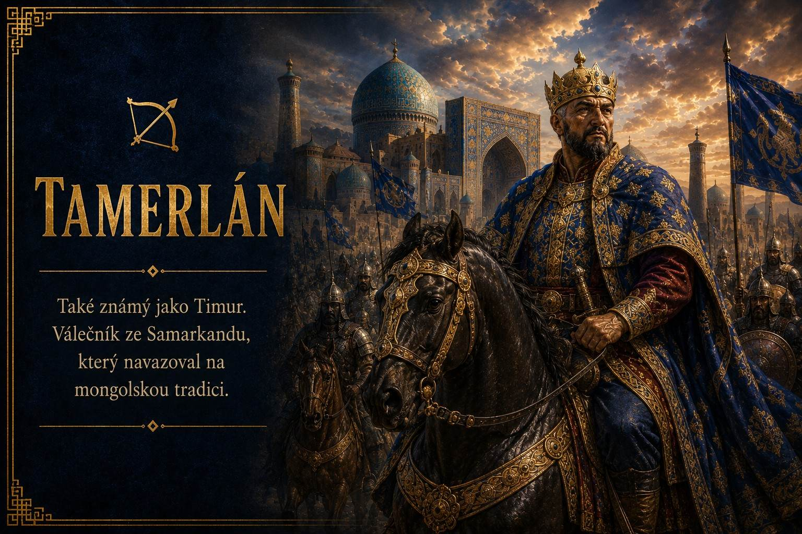

🏛️
Historie
🌍
Cestování
🧭
Výlety
🎫
Akce

Říše vznikaly a zanikaly.
Myšlenky přežívaly staletí.
Někteří vedli armády,
jiní vedli lidstvo k novému poznání.





Tady bude interaktivní mapa Alexandra. Teď je vložená základní mapa, další krok budou zlaté klikací body s dlouhými popisky.

Mapa nejvýznamnějších míst spojených s Čingischánem a vznikem Mongolské říše.

Mapa nejvýznamnějších míst spojených s Tamerlánem a jeho výboji.


Tady později přidáme Spartaka a Boudicu jako samostatné karty.


Budoucí výlety, plány a místa, kam se chci podívat.
Sem si můžeš zapisovat tipy na místa, kde zkusit borůvky a zároveň si dát pěknou procházku.
Tady budou budoucí historické výlety — hrady, zříceniny, vyhlídky a místa s příběhem.
Tady budou výlety, kam se dá dojet vlakem a projít si okolí bez složitého plánování.
Základ filozofie a pár myšlenek, které člověka donutí se zastavit.
Athénský filozof, který učil hlavně otázkami a rozhovorem. Věřil, že člověk má přemýšlet o sobě, o pravdě a o tom, jak správně žít.
„Vím, že nic nevím.“
Žák Sokrata a zakladatel Akademie v Athénách. Přemýšlel o duši, spravedlnosti, ideálním státě a o tom, že za viditelným světem mohou být hlubší pravdy.
Žák Platóna a učitel Alexandra Makedonského. Zabýval se logikou, přírodou, etikou i politikou. Chtěl svět pochopit pozorováním a rozumem.
Bruce Lee se inspiroval východní filozofií, hlavně taoismem. Jeho slavná myšlenka říká, že člověk nemá být tuhý a zaseknutý, ale pružný a přizpůsobivý.
„Buď jako voda.“
Voda nemá pevný tvar. Přizpůsobí se nádobě, umí klidně téct, ale dokáže být i silná a prorazit kámen.